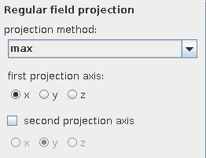

|
|
|
| input port | type | description | data acceptors |
|---|---|---|---|
| inField | VNRegularField | Regular Field 2D with affine geometry Regular Field 3D with affine geometry |
|
| output port | type | description | data schemas |
| outField | VNRegularField | Regular Field with affine geometry |
|
| outObj | VNGeometryObject |
SIMPLE PROJECTION
The simple projection module carries out a regular field projection of the first field component parallel to one of the coordinate axes.
Input data
The input field is regular 2D or 3D with affine geometry.
Output data
The output field is regular 2D or 1D with affine geometry.
Computation parameters

The projection method drop down list chooses between several projection methods: max, min, mean, normalized mean.
The first projection axis radio button menu allows to choose the projection axis. It diminishes the field dimension by one.
If the input field is 3D the second projection axis check box can be switched on and a second projection of the first projection results is made. It diminishes the field dimension by one, the output field is then 1D.
Example

Choose test regular field 3D module from test objects library, simple projection module from data filters library, graph 3D module from 2D field mappers library and axes 3D module from general mappers and accessories library and connect them.
In simple projection module UI choose z as first projection axis with max projection method. In graph 3D module UI switch set z-coordinate to field range on.